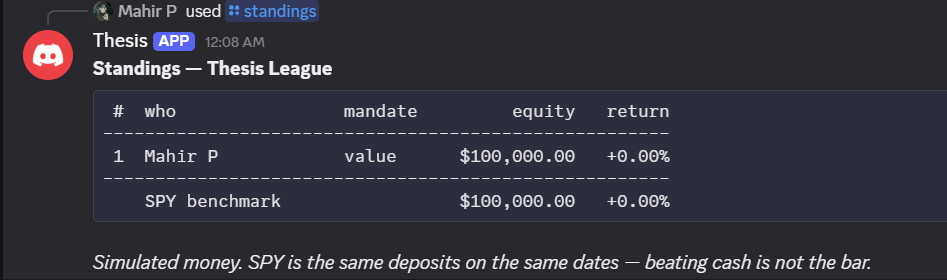

Thesis.
AI research copilot + trading journal. No position exists without a written thesis, an invalidation trigger, a horizon, and an exit plan.
- Every factual claim carries a source tag — a 10-K item, a financial statement, or a named headline.
- No recommendation language. The brief informs; you decide.
- A brief that fails its citation check is refused, not published.
- Every performance number appears next to its SPY benchmark.
Simulated money. League books are play capital and a track record on a handful of trades separates nothing — the point is whether every position had a written thesis and an honest outcome. Not investment advice.
# standings · weekly

site/standings.png
Drop a screenshot of the weekly
/standings post here. Roughly 4:3 looks best.